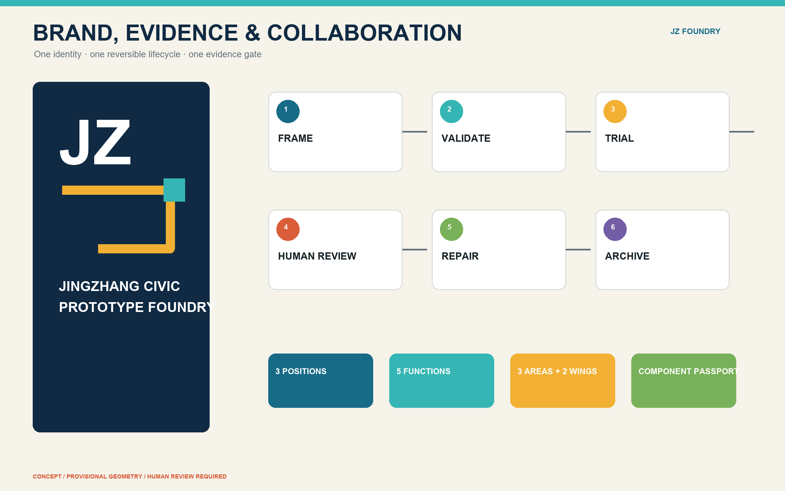
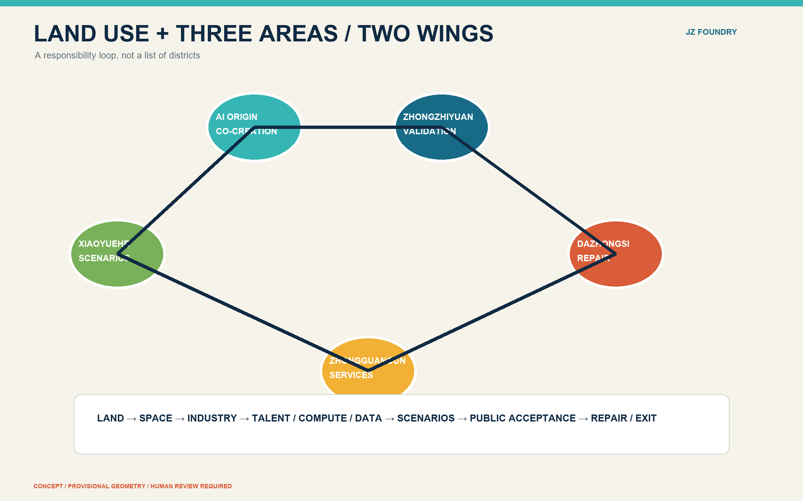
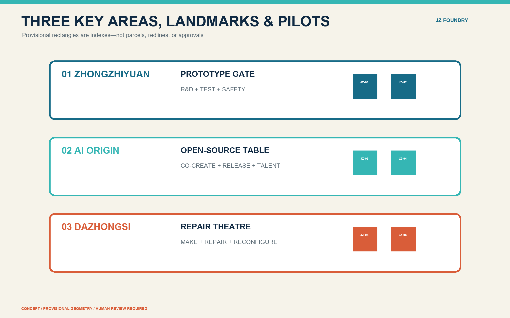
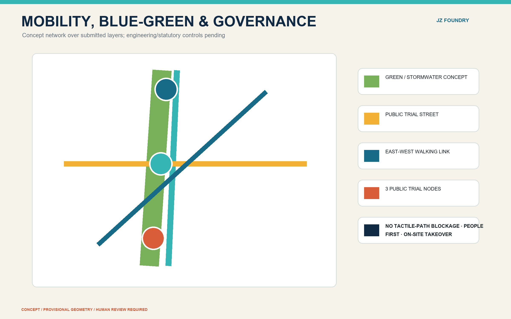
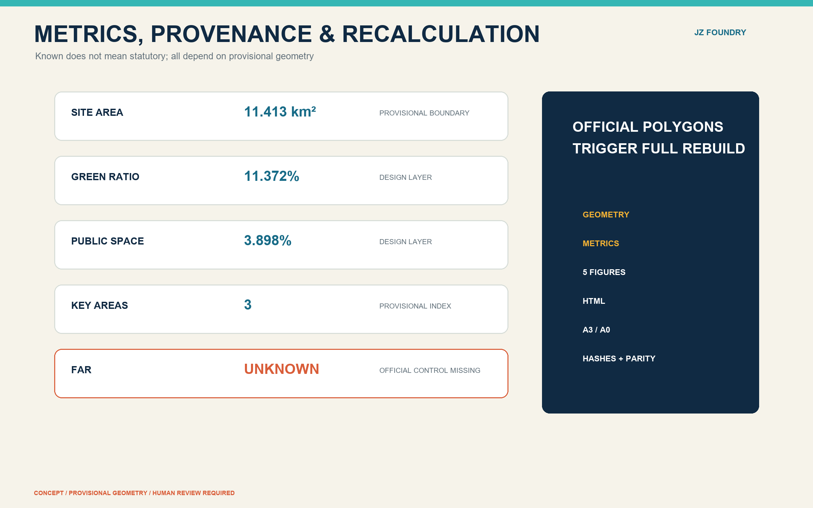

Static review index
Overview map · three scales · key areas · land use · walking network · blue-green public realm · buildings · renewal projects · AI scenarios · metrics · task coverage · self-check · sources · assumptions
11,412,825.386 sqm
0.113723
0.038980
Summary and status
The proposal treats the AI belt as a component chain through which the city can **frame problems, develop, trial, accept through human review, repair, retire, and publicly archive** civic prototypes. Zhongzhiyuan handles R&D and safety validation; the AI Origin Community provides open interfaces and public co-creation; Dazhongsi handles small-batch making, repair, and reconfiguration. The Zhongguancun Technology Service Wing connects optional IP, capital, and enterprise services; the Xiaoyuehe Scenario Wing provides public test settings and feedback. Everything is an open co-creation proposal, not an approval, procurement decision, ownership statement, or engineering-feasibility conclusion. [source:OFFICIAL-ANNOUNCEMENT] [source:AGENT-TASKBOOK] SITE_BOUNDARY and all three KEY_AREA polygons remain provisional repository geometry. Their rectangles are not redlines. Areas, ratios, clipping, and spatial relationships must be recalculated together when official polygons arrive. FAR, height/density, setbacks, road redlines, and approved uses remain unknown. This gap does not block concept review, but it blocks precise area and statutory conclusions. [data:geometry/site_boundary.geojson#SITE-001] [metric:floor_area_ratio] 
Brand and overall collaboration mechanism (agent.1)
The full name is **Jingzhang Civic Prototype Foundry**, with **JZ Foundry** as the short public name. The logo direction combines a J/Z rail line, a replaceable square component, and an open interface gap. Navy marks governance baselines, teal public space, gold trial status, and red only risks or exits. Extensions include component-passport frames, node numbers, event stamps, test-boundary markings, and bilingual wayfinding. This is an original direction only; final type, accessible contrast, and registration checks require professional review. The three positions become mechanisms: railway culture supports a timeline and repair ethic; urban AI life is delivered through a public problem ledger and ten scenario cards; AI convergence uses the R&D-interface-maintenance chain. The five functions become full-stack validation, ecosystem matching, scenario opening, active public realm, and governance/public records. [source:AGENT-TASKBOOK] The Three Areas and Two Wings operate as a loop: **Xiaoyuehe gathers consented public problems → AI Origin co-designs briefs and open interfaces → Zhongzhiyuan validates models, hardware, and safety → Dazhongsi designs small-batch making and maintenance → Jingzhang Park hosts public trials → Zhongguancun offers optional IP, procurement, capital, and enterprise-service advice → acceptance evidence returns to the problem ledger**. Each handoff uses a component passport with owner, version, data boundary, maintenance term, and exit trigger. Beiwei Community is proposed as a resident interface. Links to Future Science City, Huairou Science City, BDA, and the Beijing-Tianjin-Hebei region are only voluntary concepts for joint challenges, mutual test-record recognition, and roadshows; no existing partnership is claimed. [depth:overall_spatial_s
International cases and AI ecosystem map (agent.2)
Cases provide mechanisms, not rankings or copied urban form: | Case | Mechanism evidenced by the primary source | Jingzhang translation | Boundary | | --- | --- | --- | --- | | Toronto Vector Institute | Research, talent, adoption, and responsible AI | Validation and adoption gate | No local investment/job target [source:CASE-VECTOR] | | Montréal Mila / Mile-Ex | Open science, university collaboration, transfer, ethics | Open contributions and civic deliberation | No copied governance/brand [source:CASE-MILA] | | AI Singapore | Research, governance, co-creation, talent, open tools | Problem-to-prototype-to-training bundle | No presumed national resources [source:CASE-AISG] | | Seoul AI Hub | Training, startup support, community, overseas expansion | Repair market and international clinic | No copied firms or performance [source:CASE-SEOUL] | | ELLIS Network | Multi-centric research and joint training | Mutual test-record concept across regions | No membership claim [source:CASE-ELLIS] | | Cyber Valley | Links among research, startups, investors, public ethics | Quarterly evidence gates | No copied funding/partner promise [source:CASE-CYBERVALLEY] | The local ecosystem map connects eight auditable factors: land (provisional and reversible only), space (R&D/co-creation/repair/park trial), industry (unnamed research, startups, makers and maintainers), finance (unconfirmed competition/rental/procurement-advice channels), talent (students, engineers, maintainers and resident experts), compute (authorized cloud/edge/device resources), data (licence ledger and minimal datasets), and scenarios (open calls plus human acceptance). The Zhongguancun Wing offers optional IP screening, compliance advice, procurement pathways, and investor demos, with provider and conflicts logged.
Ten scenario cards, personas, and public route (agent.3)
Five core personas are residents/caregivers, commuters/cyclists, developers/students, startups/maintenance teams, and enterprise/international visitors. Wheelchair users, people with sensory disabilities, night workers, and non-Chinese speakers form cross-cutting accessibility panels. Personas are never used for commercial recommendations. | # / scenario / place | Minimum data and model capability | Operator and human review | Failure / exit | | --- | --- | --- | --- | | 01 Open Release Hall / Origin | Voluntary project cards; search/captioning | Community operator; author confirmation | Misattribution/leak; remove with version record | | 02 Safety Sandbox / Zhongzhiyuan | Synthetic/cleared tests; robustness/bias tests | Independent evaluators; two-person signoff | Overcollection/non-repeatability; stop, seal, review | | 03 Edge Compute Box / Zhongzhiyuan | Device telemetry; resource scheduling | Facility operator; physical cutoff | Heat/network loss; degrade or disconnect | | 04 Low-speed Robot Bay / park | Anonymous occupancy; low-speed routing | Site steward; on-site takeover | Conflict/tactile-path blockage; stop and remove | | 05 AI Walking Guide / Xiaoyuehe | Open roads + active user input; accessible routing | Mobility operator; user confirmation | Wrong/stale route; revert to static signs | | 06 Stormwater Assistant / park | Asset status + public weather; anomaly hints | Landscape maintainer; field check | False alert/miss; suggestion only, no auto action | | 07 Multilingual City Room / Dazhongsi | Cleared public info; translation/Q&A | Host; sensitive issues to staff | Mistranslation/hallucination; source, stop, correct | | 08 Community Service Desk / Origin | User-entered answers; form classification | Community staff; human closure | Misroute/leak; delete a
AI public space, landmarks, and honors (agent.4)
East-west stitching uses reversible at-grade measures: continuous accessible crossing cues, level interfaces, movable seating, and shade. North-south continuity follows the conceptual walking line and component trial street. No bridge, tunnel, underground-space, redline, or traffic-feasibility conclusion is made. [standard:MOHURD-URBAN-DESIGN-MEASURES] Three pilgrimage landmarks are working civic facilities: **Prototype Gate** at Zhongzhiyuan publishes current tests, passes/fails and human evaluators; **Open-source Table** at AI Origin provides wheelchair-integrated seating, tactile IDs and bilingual e-ink agendas, reverting to an ordinary table between events; **Repair Theatre** at Dazhongsi exposes repair, disassembly and reconfiguration, crediting maintainers before products. The honor system recognizes contribution, care, reproducibility, and correction, never popularity. It shows versions, evidence links, roles, disputes/corrections, and expiry; contributors may remain anonymous or withdraw their name. The component library comprises everyday components, innovation components, and maintenance components, all with passports. [metric:component_families] 
Cultural narrative and wayfinding (agent.5)
The storyline is: “Rail connected knowledge and people; AI connects problems, models, and care.” Railway history is limited to the verified project context; Zhongguancun culture appears through problem-led experimentation, open source, and maintenance; AI culture foregrounds model limits, human judgment, and public correction. Spatial media progress through a timeline, Prototype Gate, Open-source Table, Trial Street, Repair Theatre, and public archive. Wayfinding uses the JZ line, node numbers, and four status rings: blue=public service, teal=participatory, gold=testing, red=paused/retired. Each sign includes Chinese, English, graphics, tactile ID, and a non-QR text route. International line: **Build in public. Test with care. Repair for the city. / 公开制造，审慎试用，为城市而维修。** Cultural signs remain distinct from the belt logo and use no portraits, corporate marks, or paper imagery.
Reversible project cards and gates (agent.1/4)
| Project | Boundary / roles | Preconditions and gates | Cost / acceptance / maintenance / exit | | --- | --- | --- | --- | | JZ-01 Prototype Gate | Zhongzhiyuan node; pilot consortium + site/evaluation/access panels | Boundary → safety test → timed opening | Medium; repeatable evidence and offline fallback; monthly; remove on failure | | JZ-02 Open-source Table | Origin public edge; community lead | Owner consent → accessible prototype → event trial | Low; wheelchair place + tactile IDs; weekly; ordinary-table fallback | | JZ-03 Repair Theatre | Reversible Dazhongsi interior/canopy; maintainer alliance | Fire/electric check → training → booking | Medium; work-order closure as trial metric; daily; dismantle at term | | JZ-04 Component Trial Street | Jingzhang Park concept corridor; park coordination | Traffic/heritage/green review → segments → public acceptance | Medium; no access degradation; weekly; remove item by item | | JZ-05 Xiaoyuehe Problem Station | Scenario-wing entry; civic group | Flood/green review → anonymous intake → quarterly screen | Low; anonymous feedback + receipt; monthly disclosure; seasonal removal | | JZ-06 Passport Library | Digital + paper beltwide; asset owner | Data dictionary → privacy review → small sample | Low; complete fields + paper access; quarterly audit; export then close | Cost uses low/medium/high classes only. Common gates are G0 ownership/constraints, G1 access/safety/privacy, G2 30-90 day trial, G3 human acceptance, G4 procure/rent/redesign/exit. Any accident, tactile-path blockage, data overreach, two consecutive critical failures, or missing maintainer pauses a pilot.
Annual operations, open scenarios, and conversion (agent.6)
The annual portfolio is Q1 City Problems, Q2 Open Specifications, Q3 Park Trials, and Q4 Repair & Reproduction. JZ Foundry is the master brand; the seasons use a problem bubble, interface bracket, test ring, and wrench-square. Developer operations use public issues, a contributor covenant, rotating mentors, reproducible repositories, and conflict disclosure. The open-scenario funnel is call → public-interest screen → data/rights review → sandbox → site-risk review → timed trial → human acceptance → disclosure → procurement advice or exit. International conversion follows visit → challenge match → joint test → evidence review → voluntary landing advice, with no promise of landing, finance, or policy. Quarterly reports disclose entry/exit counts and reasons without personal or confidential business data. Roles are split among a public-site owner, independent safety/privacy review, community jury, and technical/maintenance team; a model cannot be both operator and final reviewer. [depth:phasing_implementation]
Inclusion, participation, and appeal
Every pilot checks continuous wheelchair passage and gradients on site, tactile-path continuity, rest points, child entrapment/fall hazards, night glare, multilingual information, and non-digital alternatives. Exact engineering values await statutory standards, surveys, and professional design. Recruitment covers residents, older people/caregivers, disability representatives, guardians, night workers, maintainers, and non-Chinese speakers. Compensation is suggested but subject to an approved budget. Feedback is accepted by paper card, phone/in-person desk, or anonymous web form. Suggested service targets are acknowledgement in two working days and a status response in ten; safety reports cause immediate shutdown. Appeals are reviewed by someone outside the original decision. Quarterly disclosure lists de-identified issues, decisions, corrections, and reasons for rejection. Low-speed robots yield absolutely to people, never occupy tactile paths, use geofencing and on-site takeover, and publish incident reviews.
Metrics, mobility-blue-green system, and evidence boundary
  Current machine values serve only as internal checks against provisional geometry: site_area_sqm=11,412,825.386; green_ratio=0.113723; public_space_ratio=0.038980; key_area_count=3; floor_area_ratio=unknown. [metric:site_area_sqm] [metric:green_ratio] [metric:public_space_ratio] [metric:key_area_count] [metric:floor_area_ratio] Official polygons trigger a full rebuild of geometry, metrics, all five figures, HTML, A3/A0, manifest hashes, and the bilingual checklist.
Risk, rights, and human judgment
No photorealistic images are used. Five information graphics and all A0/A3 pages are generated from the same bilingual data model. Maps use no remote tiles. Microsoft YaHei/Arial are operating-system fonts embedded in PDFs only, not distributed as assets. Generation, licence, and limits are itemized in sources.json and report/copyright_statement.md. AI output, translation, accessibility, fire, electrical, drainage, transport, heritage, privacy, procurement, and planning judgments require final review by relevant professionals and authorities. [source:SOURCE-REGISTRY]